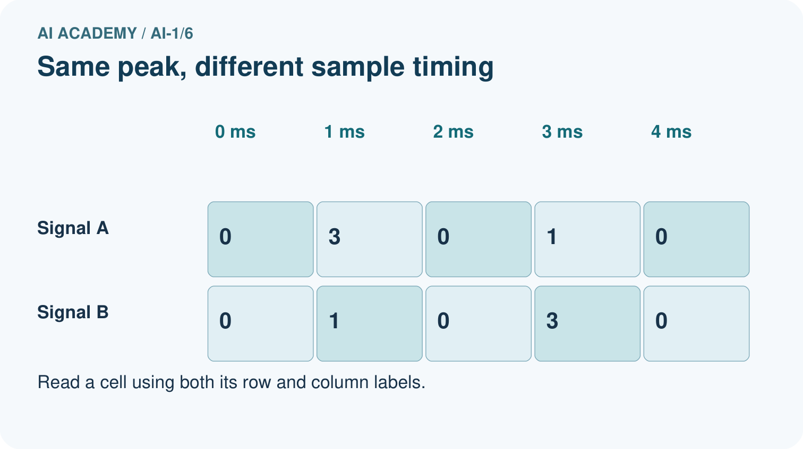
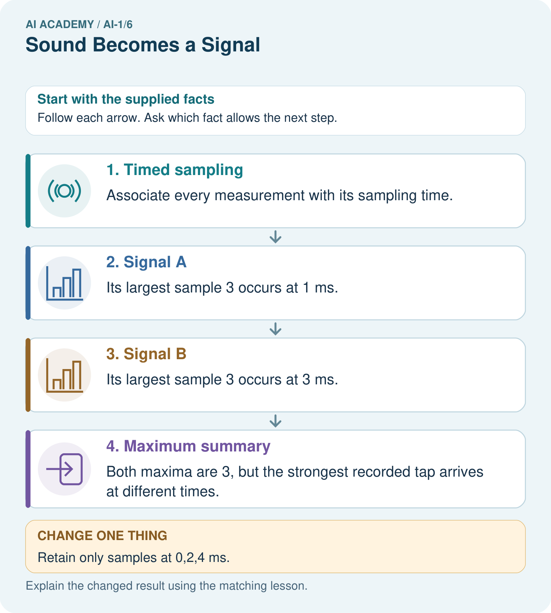
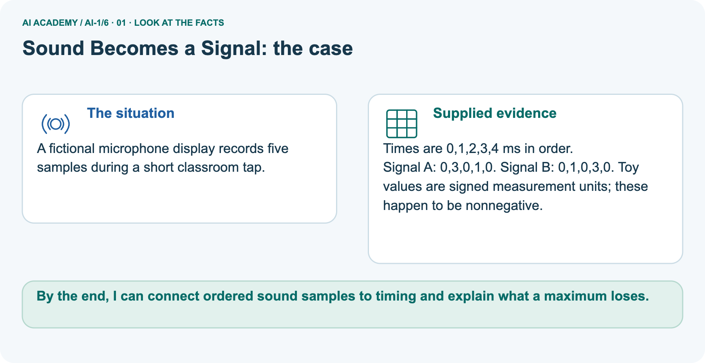
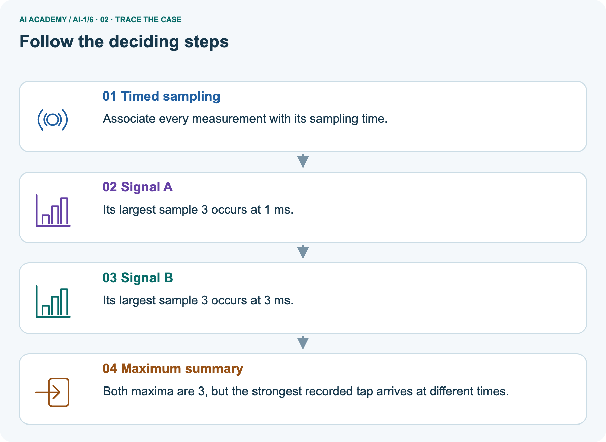
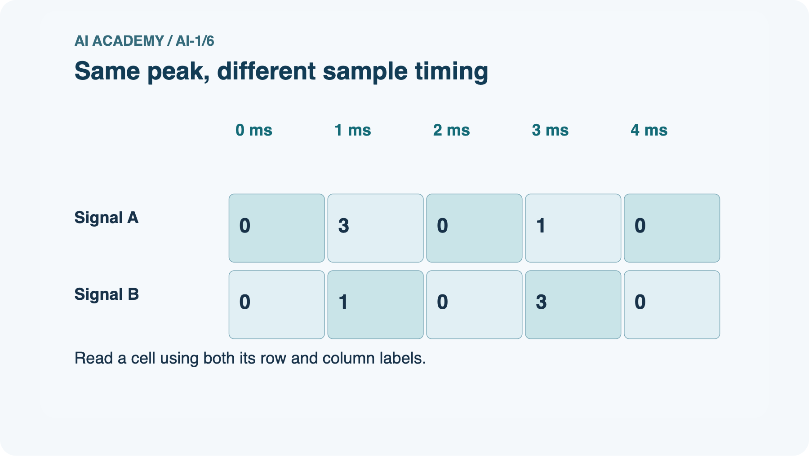
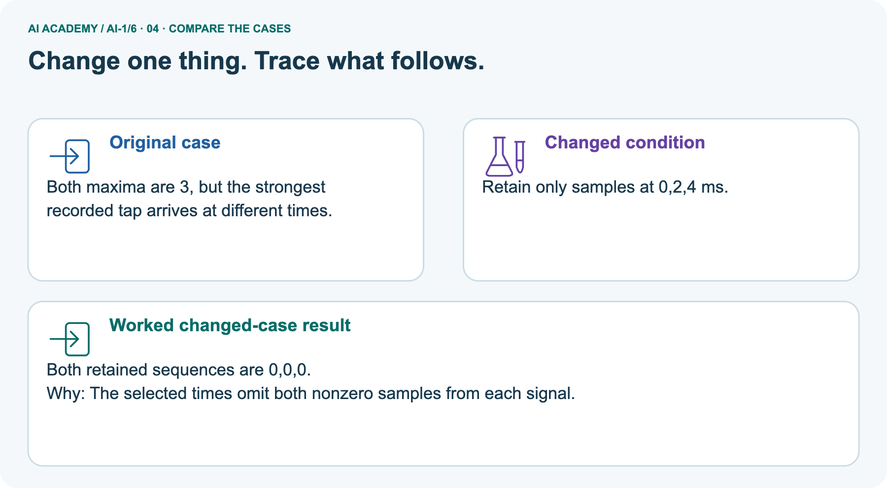
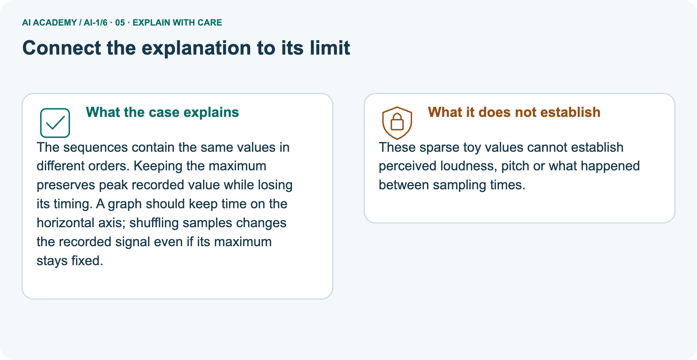
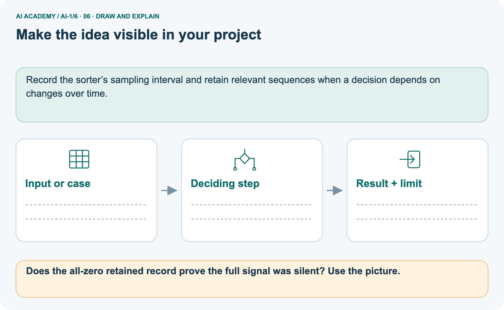

AI Academy · Level 1 · Grade 6 · Week 6 · Teacher guide
Sound Becomes a Signal
Learn to understand, design, build, test and explain AI systems responsibly.
Project: Helpful Classroom Sorter
Teacher guide · 1 of 9
Sound Becomes a Signal
Prepare Sound Becomes a Signal: check the target, prerequisites, resources and adaptable teaching schedule.
Teach the learning cycle
Primary target: Interpret an ordered sequence of sound-signal samples with a stated time interval
| Session | Sequence and minutes | Resources |
|---|---|---|
| Session 1 · Understand · 45 min | 0–7: recall and prerequisite; 7–15: inspect the concrete case and predict; 15–30: teacher models the worked trace; 30–40: learners explain a step using the text and visual; 40–45: check the core idea. | Sections 1–6; record the brief recall in the workbook. |
| Session 2 · Practise · 45 min | 0–5: retrieve the procedure; 5–15: W2 completion practice; 15–23: explain and check with a partner; 23–30: each learner answers the misconception check; 30–40: targeted reteaching or a harder variation; 40–45: prepare the investigation. | Sections 7–10; use the matching workbook W2 and misconception check. |
| Session 3 · Investigate and transfer · 45 min | 0–5: retrieve the decision rule; 5–20: investigate or trace; 20–30: start the independent case; 30–38: connect the project; 38–43: act on feedback; 43–45: plan the return check. | Sections 9 and 11–14. Give extra time to finish the full task set; use Section 15 when the week includes a coding lab. |
This is a starting allocation of 135 minutes, not a validated duration. Preserve all named topics. Schedule extra time for connected examples, the full investigation, independent cases and project building.
Repeated copies of a case share one recorded attempt; they are not new evidence.
Retrieval answer guidance
Pictures Become Numbers
Without opening the old lesson, explain one key idea from Pictures Become Numbers. Give an example and a mistake that the idea helps you avoid.
Look for: Encode and reconstruct a small image using an explicit grid convention
Reference example, not the only acceptable wording: The upper row has black, white, black; the lower row has white, black, white. Reading back gives the supplied two rows.
There are three black pixels among six total positions.
Sensors Are Messengers
Without opening the old lesson, explain one key idea from Sensors Are Messengers. Give an example and a mistake that the idea helps you avoid.
Look for: Describe a measurement using its quantity, value, unit and conditions
Reference example, not the only acceptable wording: Keep the observed value 24 and approximate time lunchtime; mark the unit, exact time if needed, location, exposure and device identity as unknown or to be checked.
A suitable completed record needs air temperature, value, unit and relevant conditions. Invented degrees C or shade is not an observation.
Use the student module and workbook section with this exact week title. The worked case, independent question and answers below form one aligned lesson sequence.
What the learner must demonstrate
A whisper recorded close to a microphone has larger sample amplitudes than a shout recorded far away. Does the recording prove the whisper was louder at its source? Propose one controlled follow-up.
Concept to explain
Computers receive changing measurements, not human-like hearing.
| Term | Meaning |
|---|---|
| waveform | graph of a signal changing over time |
| sample | one measurement at one moment |
| amplitude | size or strength of a signal value |
| noise | unwanted signal mixed with the target |
Prepare the class
Use the supplied scenario, student illustrations and blank paper. For numeric work, offer counters or a calculator after learners show the setup. Fictional records are supplied; personal data and paid accounts are unnecessary.
Alternative compact allocation
This compact option is not the full-week schedule. Use the main teaching cycle and allow extra sessions for the investigation, independent work and project.
Allow 80 minutes: recall 8; explanation 12; worked demonstration 15; guided practice 20; independent assessment 15; project and reflection 10. Extend the lab into a second session when needed.
Preparation for the connected explanation
Keep the distinction between physical pressure variation, microphone signal and stored numerical samples.
The examples use arbitrary nonnegative signal values to avoid introducing signed waveforms before they are needed; they do not model real speech faithfully. The lesson establishes ordering, time metadata and information loss.
It does not teach a sampling theorem or make hearing-health claims.
Readiness answer
The total does not preserve positions. Different arrangements can contain the same number of black pixels.
A time strip marked 0 through 8 milliseconds and paper sample-value cards
A cover sheet to hide omitted time positions
Printed fictional speech requests; recording students or opening accounts is unnecessary
End goal for the pictorial case
By the end, I can connect ordered sound samples to timing and explain what a maximum loses.
This added worked case illustrates the week’s main idea. Retain all original and connected topics; schedule its practice within the teaching cycle.
Teacher guide · 2 of 9
Explain the mechanism
Model Sound Becomes a Signal using the supplied case, labelled mechanism and reasoning. Make the scope of each conclusion explicit.
Follow the information instead of imagining magic inside the machine.
1. Input — information entering
INPUT changing air pressure
2. Process — the deciding step
PROCESS sample the signal and compare a clap pattern
3. Output — the result
OUTPUT clap detected, not detected, or uncertain
Key idea
CORE IDEA Computers receive changing measurements, not human-like hearing.
How the mechanism works
UNDER THE HOOD Audio is represented by samples taken over time. Sample rate describes how often measurements are taken; amplitude describes signal strength.
Noise can overlap the target pattern, so detection requires a decision rule or model and an uncertainty policy.
Draw a fresh example with all three stages:
Every step connects a claim to observable evidence.
The case to investigate
CASE A microphone converts air-pressure changes into a sequence of measured values that can be plotted as a waveform.
Step 1
STEP 1 — OBSERVE changing air pressure
Step 2
STEP 2 — TRACE sample the signal and compare a clap pattern
Step 3
STEP 3 — CONCLUDE clap detected, not detected, or uncertain
Model answer
MODEL REASONING Look for two strong peaks separated by the expected gap. Noise may add extra peaks or hide a clap. A safe detector needs thresholds, timing rules, and a not-sure result when evidence is weak.
A claim to avoid
DO NOT OVERCLAIM A microphone measures a signal; it does not understand a speaker's meaning by itself.
What new evidence could change this answer?
Concrete teaching case
The teaching case
A microphone records quiet and loud claps at the same distance and settings.
What waveform difference is expected? Does it reveal a spoken word?
Exact explanation to model
Why the result follows
The louder clap generally produces larger amplitude. Amplitude is not word meaning. Distance, gain and noise must be controlled.
Explain the added worked example
Explain the added worked example · 1
Sound involves changing pressure in a medium such as air. A microphone responds to that variation and produces a changing signal. A digital recording stores measurements of the signal at successive times.
The values are ordered: swapping their times changes the represented pattern.
Explain the added worked example · 2
We will use tiny invented sequences to study this idea on paper. Their values are arbitrary signal units, not decibels or a test of safe listening levels.
Real audio uses many more samples, so our five-point examples should not be played as if they were a realistic recording of speech.
A recording must include enough information to interpret the values, including their time spacing and encoding. The sequence 0,2,0,2,0 does not by itself say how quickly the changes happened.
This is similar to needing image dimensions as well as pixel values.
Explain the added worked example · 3
There are five samples with four gaps between the first and last. Each gap is 1 millisecond, so the elapsed time from first to last is 4 milliseconds.
If the same five values were spaced 2 milliseconds apart, they would span 8 milliseconds. Equal value lists with different timing do not describe the same time pattern.
Key terms
| Term | Meaning |
|---|---|
| Signal | A changing physical or recorded quantity that can carry information |
| Sample | A recorded value of a signal at a particular time in this lesson |
| Sampling interval | The time between successive recorded samples |
| Waveform | A representation of how a signal value changes over time |
| Transcript | A text representation of spoken words, which may contain errors or omit sound details |
Model the reasoning aloud
Use the complete worked example below before asking learners to complete W2. Reveal a small part, invite a prediction, then explain the deciding step.
These teacher notes contain solutions; do not reveal the independent case answer during modelling.
The largest value in 0,2,0,2,0 is 2. The largest value in 0,0,2,0,0 is also 2. The first sequence reaches 2 twice at different times, while the second does so once.
Keeping only the maximum loses that distinction, just as counting black pixels lost their arrangement.
Model the reasoning aloud · 4
Sparse measurements can also miss changes. If we inspect the first sequence only at times 0, 2 and 4 milliseconds, all retained values are 0. The two intervening values of 2 disappear from the record.
It would be incorrect to conclude from these retained samples alone that the signal stayed at zero between them.
Model the reasoning aloud · 5
More frequent sampling can preserve faster changes under suitable recording conditions, but sampling frequency alone does not make every recording clear.
Microphone placement, background sound, clipping and the recording format can also matter. We are studying one source of missing information, not a complete audio engineering specification.
| Thinking move | Teacher prompt |
|---|---|
| Plan | What is given? What is the question? Which procedure fits these facts? |
| Do | Point to each input and intermediate step in the worked trace. Name the rule that allows the next step. |
| Check | Does the output answer the question? Which assumption or limitation prevents a larger claim? |
Use the diagram and verbal explanation together. Ask learners to match a sentence to a specific visual step; do not assign learners fixed visual or auditory learning styles.
A pictorial worked case: Sound Becomes a Signal
A fictional microphone display records five samples during a short classroom tap.
The facts we will use
Supplied facts
Times are 0,1,2,3,4 ms in order.
Supplied facts
Signal A: 0,3,0,1,0. Signal B: 0,1,0,3,0. Toy values are signed measurement units; these happen to be nonnegative.


Read the picture one step at a time
Why this result follows
Why the result follows
The sequences contain the same values in different orders. Keeping the maximum preserves peak recorded value while losing its timing.
A graph should keep time on the horizontal axis; shuffling samples changes the recorded signal even if its maximum stays fixed.
What this example does not establish
Keep the stated limit
These sparse toy values cannot establish perceived loudness, pitch or what happened between sampling times.
Change one thing in the pictured case
Change one thing
Change: Retain only samples at 0,2,4 ms.
Predicted result
Prediction: Both retained sequences are 0,0,0.
Why the result follows
Reason: The selected times omit both nonzero samples from each signal.
Ask while showing the picture
Ask while showing the picture · 6
Cover the result. Ask learners to name the inputs and predict the next step. Uncover one step, connect the icon to the actual procedure, and explain its evidence. Then change the supplied condition and compare.
The picture is a representation; it does not document execution of a real AI model.
Teacher guide · 3 of 9
Demonstrate and guide practice
Demonstrate Sound Becomes a Signal, reduce support deliberately and check individual reasoning before discussing answers.
Board sequence
1. Put the facts on the board
Write the given facts: A microphone records quiet and loud claps at the same distance and settings.
2. State the decision to explain
Write the question to explain: What waveform difference is expected? Does it reveal a spoken word?
3. Reveal the worked reasoning
Reveal after predictions: The louder clap generally produces larger amplitude. Amplitude is not word meaning. Distance, gain and noise must be controlled.
Hold back the independent task
Keep for an independent attempt: Two recordings contain the same word: one quiet and one loud. Which device receives the sound? Does a larger wave automatically mean a different word? Explain.
Classroom dialogue
Ask the class
Ask: Which facts are given, and which would we have to assume? Learners mark relevant details before discussing answers.
Language to model
Say: Predict first. Show the rule, information path or calculation that would produce the result. A correct guess is not yet an explanation.
Reveal reasoning one step at a time. Explain why a tempting alternative fails. Write units and denominators for arithmetic, trace conditions for decisions, and identify supporting sources for claims.
In pairs, one learner solves while the other checks evidence; exchange roles. Remove the worked answer before independent assessment.
Model these guided questions
The interval is 2 ms and first-to-last duration 8 ms. Keeping 0,4,8 ms retains 0,0,0 and misses the 3 and 1 at 2 and 6 ms. A transcript can preserve estimated words but may omit pauses or background sounds.
Correct arithmetic on a transcribed number does not establish that the number matches the recording.
Case-specific teaching sequence
| Stage | Teacher action |
|---|---|
| Session 1 start 0 to 7 minutes | Retrieve equal pixel counts with different arrangements. Replace position in space with position in time. |
| 7 to 20 minutes | Trace the recording/transcript/processing diagram. Explain the invented units and times. |
| 20 to 33 minutes | Count gaps physically between five sample cards. Compare the same values at two time intervals. |
| 33 to 45 minutes | Complete W1 and W2, covering omitted positions and naming lost changes. |
| Session 2 start 0 to 8 minutes | Compare the equal-maximum sequences. Require a specific difference, not only less information. |
| 8 to 23 minutes | Complete W3 and practise constructing two records that agree at retained times. |
| 23 to 38 minutes | Collect W4 independently, checking all seven positions and the three retained constraints. |
| 38 to 45 minutes | Discuss W5 and the exit question. Close the unit by connecting evidence, representation, measurement, fitting, pixels and samples. |
Reduce help deliberately
Completion practice
Completion task: Retain only times 0,4,8 from W1. Write the retained values. Give one claim about the original signal that these retained values do not justify.
Reasoning to listen for
Teacher check: The retained values are 0,0,0. They do not justify saying the signal was always zero or had no changes between those times; the original had values 3 and 1 at omitted times.
Start by identifying the given inputs together. Leave the intermediate steps blank. If needed, model one step, then withdraw that help on the next step. Move to a full trace only when the partial trace is understood.
For partners, alternate explainer and checker; collect a response from every learner before discussion.
Individual reasoning check
Use the worked case for Sound as sampled information. Proposed explanation: “Five samples make five gaps”. Decide whether this explanation is supported.
Point to the step or supplied fact that decides; explain your repair if needed.
Expected repair
Expected correction: Place five cards in a row and point to each space between them. The span ends at the last sample.
Collect explanations, not only yes/no votes. If a misunderstanding is common, re-model the relevant step for the class.
If it affects a few learners, give a short targeted group explanation while others solve a more demanding variation.
Pictorial practice question
Does the all-zero retained record prove the full signal was silent? Use the picture.
Reasoned teacher answer
No. The full supplied signals contain nonzero values at 1 and 3 ms; those measurements were discarded.
Changed-case reasoning: Both retained sequences are 0,0,0. The selected times omit both nonzero samples from each signal.
Collect each learner’s explanation before discussion. Use the first missing connection between input, deciding step and result to choose support. This question is worked-case practice, not fresh mastery evidence.
Teacher guide · 4 of 9
Run the weekly evidence lab
Run the Sound Becomes a Signal investigation and use the first unsupported step to choose a teaching response.
Predict first, test honestly, and explain what the evidence means.
1. Predict
State your prediction before the result is known.
2. Investigate
Complete the task: Build a clap-pattern detector; test it with background noise.
3. Compare cases
Keep a normal case and an edge case clearly separated.
4. Record honestly
Record what happened—even when it does not match your prediction.
5. Explain and plan the next test
Explain the result, one limitation, and the next useful test.
Use a fresh case after support
INDEPENDENCE After support is removed, repeat the proof with a fresh case.
Make the lab runnable
Use the concrete case as the shared normal case and the independent question as a second case. Each pair creates a boundary or missing-information case and predicts its result before testing.
Keep the expected result separate from an observed mistake.
| Record | What to capture |
|---|---|
| Input or evidence | Exact data, instruction or claim |
| Expected result | Answer or safe fallback declared before the run |
| Observed result | Actual result, including errors |
| Explanation | Rule, calculation or evidence explaining the outcome |
| Next test | One justified change and a new prediction |
Diagnose and reteach
Find the unsupported claim
CLAIM TO REPAIR Louder always means a different word.
For guessing, return to given facts and request a trace. For vocabulary without application, use one example and one non-example. For arithmetic errors, check the setup before the calculation.
Finish with a different uncoached case before recording mastery.
Address these additional misconceptions
Five samples make five gaps: Place five cards in a row and point to each space between them. The span ends at the last sample.
Equal recorded zeros prove the signal stayed zero: Reveal hidden sample cards between retained zeros. Construct both changing and unchanging originals.
A transcript is the recording in another file type: Compare the information each representation retains. Text estimates words and need not preserve sound details or exact wording.
Match the support to the first error
| What the response shows | Next teaching action |
|---|---|
| Missing or misread facts | Read the case aloud, mark supplied versus unknown facts, and let the learner restate it. |
| Wrong procedure | Return to the deciding step in the worked case. Contrast it with the proposed incorrect explanation. |
| Arithmetic or implementation error | Trace intermediate values or lines; preserve the first mismatch and retry that step. |
| Correct result without a reason | Ask for a trace and a changed case before marking independent understanding. |
| An unsupported wider claim | Ask which supplied evidence supports the claim and which further observation would be needed. |
Offer an oral explanation, drawing, enlarged visual or fewer examples when that removes a reading/writing barrier. Keep the same reasoning goal.
Stretch secure learners by changing a boundary or assumption and asking them to defend the effect, not simply by assigning more of the same questions.
Teacher guide · 5 of 9
Assess and explain the answers
Use the Sound Becomes a Signal questions, teacher keys and criteria after the relevant attempts. Previously discussed cases are practice; protect the separately selected independent task.
Worked case answer
Teacher key · Worked case answer
The louder clap generally produces larger amplitude. Amplitude is not word meaning. Distance, gain and noise must be controlled.
Independent question
Independent question · withhold the key
Two recordings contain the same word: one quiet and one loud. Which device receives the sound? Does a larger wave automatically mean a different word? Explain.
Expected independent answer
Teacher key · Expected independent answer
A microphone receives the sound. Larger amplitude can mean louder sound; it does not by itself establish a different word. Word recognition needs the sound pattern over time.
What counts as evidence
| Criterion | 0 points | 1 point | 2 points |
|---|---|---|---|
| Result | Incorrect or absent | Partly correct | Correct with necessary conditions |
| Reasoning | No supporting trace | Some steps | Clear mechanism, calculation or source support |
| Limit | Overclaims certainty | Vague limitation | Relevant uncertainty or missing fact |
| Transfer | Copies without adapting | Adapts with prompts | Solves a changed case independently |
Use 6/8 as a classroom checkpoint, with 2 required for both Result and Reasoning. This is a proposed teaching rule, not a validated certification threshold.
Do not count a coached answer as independent mastery; correct unsafe or unsupported claims regardless of total.
Feedback
Ask the learner to find the evidence that challenges this claim: “Louder always means a different word.” Keep the first attempt and an uncoached retry separate.
Original transfer answer
Teacher key · Original transfer answer
No. Recorded amplitude depends on distance, gain and background as well as source sound. Compare sounds at the same distance and gain in similar conditions. Even then amplitude does not identify the words or their meaning.
Explanations for the additional workbook examples
W1 Read samples and gaps
Workbook question · W1
Five samples have values 0,3,0,1,0 at times 0,2,4,6,8 milliseconds. State the sample count, interval and elapsed time from first to last. Explain why there are four gaps.
Teacher reasoning · W1
Five samples, a 2 ms interval, and 8 ms from first to last. Consecutive pairs make gaps 0-2, 2-4, 4-6 and 6-8: four gaps between five samples.
W2 Inspect what was discarded
Workbook question · W2
Retain only times 0,4,8 from W1. Write the retained values. Give one claim about the original signal that these retained values do not justify.
Teacher reasoning · W2
The retained values are 0,0,0. They do not justify saying the signal was always zero or had no changes between those times; the original had values 3 and 1 at omitted times.
W3 Compare equal summaries
Workbook question · W3
Sequences A=0,2,0,2,0 and B=0,0,2,0,0 use the same time interval. State their maximum values and one difference the maximum discards. Name information that would preserve that difference.
Teacher reasoning · W3
Both maxima are 2. A reaches 2 at two sample positions while B does so at one; their timing patterns differ. The full ordered samples with timing preserve the distinction. A maximum alone does not.
W4 Construct a new hidden change
Workbook question · W4
A record keeps values 0 at times 0,3,6 milliseconds. Construct two seven-sample sequences for every whole-millisecond time from 0 through 6 that agree with those retained values but differ at omitted times.
Explain why the retained record cannot prove that nothing changed between measurements.
Teacher reasoning · W4
One pair is [0,0,0,0,0,0,0] and [0,2,1,0,3,1,0]. Both have zero at indices/times 0,3,6, but the second changes at omitted times.
The retained record is compatible with both, so it cannot establish an unchanged intervening signal. Any valid seven-value pair with those constraints is acceptable.
W5 Check a speech pipeline
Workbook question · W5
A recording says Set the timer for fourteen minutes. A transcript says forty minutes and the timer is set to 40.
Name the first mismatch, propose a confirmation step and explain why the transcript cannot be treated as a complete copy of the recording.
Teacher reasoning · W5
The first stated mismatch is fourteen becoming forty in transcription. Show or read back the interpreted duration and require correction/confirmation before starting the timer.
A transcript may misstate words and omit tone, pauses and background sounds; correct handling of 40 does not validate the earlier transcription.
Assess independent transfer
Independent question · withhold the key
Selected case: A record keeps values 0 at times 0,3,6 milliseconds. Construct two seven-sample sequences for every whole-millisecond time from 0 through 6 that agree with those retained values but differ at omitted times.
Explain why the retained record cannot prove that nothing changed between measurements.
Selected case answer
Teacher key · Selected case answer
One pair is [0,0,0,0,0,0,0] and [0,2,1,0,3,1,0]. Both have zero at indices/times 0,3,6, but the second changes at omitted times.
The retained record is compatible with both, so it cannot establish an unchanged intervening signal. Any valid seven-value pair with those constraints is acceptable.
| Dimension | Evidence required |
|---|---|
| Explanation | Names the applicable idea or procedure and ties it to the supplied facts. |
| Trace and result | Preserves the given inputs and shows the relevant intermediate steps; distinguishes a prediction from an observed execution. |
| Limits | States the assumptions, missing evidence or conditions under which the result would change. |
Teacher key · Selected case answer
Record each dimension as not yet, with support, or independent. Accept a valid alternative procedure with a defensible trace.
Do not penalise an honestly recorded model failure if the learner correctly explains its evidence and limits.
Feedback that the learner uses
Name the earliest unsupported step and give one action to repair it. Have the learner make that repair now and explain why. Then assess the relevant skill on a fresh, fully specified case.
Confirm it was not previously practised with feedback; solve and check the new case before assigning it. A follow-up design prompt is a starting brief, not automatically an equivalent test.
Teacher guide · 6 of 9
Connect and extend learning
Connect Sound Becomes a Signal to Helpful Classroom Sorter, adapt support and plan a later changed-case check.
Helpful Classroom Sorter
If the sorter uses sound, specify the exact sound pattern needed and test whether classroom noise makes that input unreliable.
Keep the decision, input, result, explanation and remaining limitation in the project evidence record. Retrieve this record next week rather than restarting the project.
Support and stretch
Use physical cards, spoken explanations and a three-stage drawing. Read aloud without giving the answer. Stretch: compare two mechanisms with the same visible output and explain what evidence distinguishes them.
Exit reflection
Ask for one decision the learner can now justify and one situation requiring more evidence or human review. Confidence ratings are separate from correct independent performance.
Bridge to the next week
Next: Week 7: Categories and Labels. Retrieve today’s evidence and identify what carries forward and what is new.
Support and fresh reassessment
Use large labelled boxes and tactile counters. Read values aloud while pointing to their time labels. No hearing-based task is required.
Extension: ask whether doubling the interval changes the number of samples, the first-to-last duration or the stored values when the same list is replayed under the new timing convention.
W4 is secure when each proposed sequence has seven values, both satisfy the zero constraints at 0,3,6, at least one omitted position differs and the explanation identifies ambiguity between measurements.
If positions are confused, reteach with labelled time boxes, then assess a fresh retained-time pattern.
Week 7 builds on this unit by defining categories operationally so different people can label the same evidence consistently.
Plan the delayed return
Suggested return points in this level: ai-1/7, ai-1/9, ai-1/12. Use actual classroom dates, adjusting for holidays and gaps. One, three and six teaching weeks are scheduling choices, not a claimed optimal spacing.
At a delayed check, ask for the idea from memory and a changed application. Compare with the earlier independent response and record support used.
For a new level, revisit the previous capstone before checking the new prerequisites.
| Record | Teacher evidence |
|---|---|
| Learner code and date | |
| Concept and case used; prior exposure | |
| Explanation / trace / limits | |
| Support and first repair | |
| Changed case and delayed outcome | |
| Next teaching action |
Use the evidence to choose reteaching or the next step. A completed page, confidence rating or attractive project does not by itself demonstrate understanding.
Project evidence from this case
Record the sorter’s sampling interval and retain relevant sequences when a decision depends on changes over time.
Teacher guide · 7 of 9
Prepare, teach and assess
Use this preparation summary alongside the detailed Sound Becomes a Signal lesson; it is a checklist rather than a replacement for the full sequence.
Teaching target
Teaching target: Interpret an ordered sequence of sound-signal samples with a stated time interval
Prepare the labelled worked-case picture, the matching workbook, fictional input cards and a place for individual responses. No paid AI account is required for the paper reasoning activities.
| Session | Plan | Resources |
|---|---|---|
| Session 1 · Understand · 45 min | 0–7: recall and prerequisite; 7–15: inspect the concrete case and predict; 15–30: teacher models the worked trace; 30–40: learners explain a step using the text and visual; 40–45: check the core idea. | Sections 1–6; record the brief recall in the workbook. |
| Session 2 · Practise · 45 min | 0–5: retrieve the procedure; 5–15: W2 completion practice; 15–23: explain and check with a partner; 23–30: each learner answers the misconception check; 30–40: targeted reteaching or a harder variation; 40–45: prepare the investigation. | Sections 7–10; use the matching workbook W2 and misconception check. |
| Session 3 · Investigate and transfer · 45 min | 0–5: retrieve the decision rule; 5–20: investigate or trace; 20–30: start the independent case; 30–38: connect the project; 38–43: act on feedback; 43–45: plan the return check. | Sections 9 and 11–14. Give extra time to finish the full task set; use Section 15 when the week includes a coding lab. |
Before class, solve the supported practice: Retain only times 0,4,8 from W1. Write the retained values. Give one claim about the original signal that these retained values do not justify.
Supported practice answer
Reasoned practice answer: The retained values are 0,0,0. They do not justify saying the signal was always zero or had no changes between those times; the original had values 3 and 1 at omitted times.
Check every learner before discussion: Use the worked case for Sound as sampled information. Proposed explanation: “Five samples make five gaps”. Decide whether this explanation is supported.
Point to the step or supplied fact that decides; explain your repair if needed.
Repair the misconception
Misconception repair: Place five cards in a row and point to each space between them. The span ends at the last sample.
Support without giving away the answer
Support: read the exact case aloud, enlarge the labelled picture, supply input cards and model only the first deciding step. Accept a spoken explanation or drawing; retain the reasoning goal.
Extend the reasoning
Extension: Retain only samples at 0,2,4 ms. Require a prediction and a reason before comparing. Expected result: Both retained sequences are 0,0,0. Reason: The selected times omit both nonzero samples from each signal.
Protect the independent attempt
Independent assessment: withhold the reserved answer until the learner has attempted the new case. Record support separately from correctness.
| Criterion | Not yet | With support | Independent |
|---|---|---|---|
| Explanation | Names an answer without a deciding fact | Uses a hint to link fact and decision | Explains the deciding fact in own words |
| Trace or test | Cannot connect input and result | Completes steps with prompts | Traces or tests a changed case accurately |
| Limits and revision | Claims more than evidence supports | Names a limit after a prompt | States a defensible limit and useful next test |
Project checkpoint
Project checkpoint: Frame the need. Name the user, the problem, allowed inputs and a safe simple starting method.
Use the weekly teacher answer for topic-specific reasoning. A saved progress tick is an activity record; judge mastery from the learner’s explanation and evidence.
Teacher guide · 8 of 9
Use feedback, labs and repair paths
Use feedback, earlier review and portfolios purposefully. Apply the coding routine only when this lesson has an executable lab.
Use the two formative questions as supported practice, not as independent mastery scores. Discuss the deciding evidence rather than accepting a guessed selection.
The feedback comes from the reviewed public worked case. Do not reveal the separately reserved independent teacher answer until the learner has attempted that case.
For later coding lessons
This week has no code block. Use this routine when a later lesson includes an executable lab.
Ask students to predict before running code. Preserve errors and actual outputs; collect a changed test and an explanation. The branch-boundary and indexing lessons deliberately include failure cases.
Use the earlier worked-explanation links to address a specific missing building block, then return to the current question. Adapt this suggestion after observing the learner; it is not an automatic diagnosis.
Collect the completed-work portfolio as evidence. Record support separately from correctness, and assess explanation, trace/test and limitations. Progress ticks and quiz selections alone do not establish mastery.
Teacher guide · 9 of 9
Visual concept journey
Show one Sound Becomes a Signal graphic at a time, request a prediction and discuss its trace before the independent assessment.
Use one picture at a time. Hide a worked result before asking for a prediction, then reveal it for feedback. These are supported teaching cases; retain the separate independent assessment for a fresh first attempt.
01. Sound Becomes a Signal: the case

A fictional microphone display records five samples during a short classroom tap. Supplied facts: Times are 0,1,2,3,4 ms in order. Signal A: 0,3,0,1,0. Signal B: 0,1,0,3,0.
Toy values are signed measurement units; these happen to be nonnegative.
Point to the given fact that matters most. Explain why it matters.
Discuss while showing the picture
Teacher prompt: Point to the given fact that matters most. Explain why it matters. Ask learners to describe one label or arrow in ordinary words. Use the adjacent transcript if the image is difficult to see.
02. Follow the deciding steps

Timed sampling: Associate every measurement with its sampling time. → Signal A: Its largest sample 3 occurs at 1 ms. → Signal B: Its largest sample 3 occurs at 3 ms. → Maximum summary: Both maxima are 3, but the strongest recorded tap arrives at different times.
Point to each numbered stage and explain which recorded input it uses.
Discuss while showing the picture
Teacher prompt: Point to each numbered stage and explain which recorded input it uses. Ask learners to describe one label or arrow in ordinary words. Use the adjacent transcript if the image is difficult to see.
03. Same peak, different sample timing

Same peak, different sample timing. Signal A: 0 ms = 0, 1 ms = 3, 2 ms = 0, 3 ms = 1, 4 ms = 0. Signal B: 0 ms = 0, 1 ms = 1, 2 ms = 0, 3 ms = 3, 4 ms = 0.
Read the labels and values. Explain the relationship the model shows.
Discuss while showing the picture
Teacher prompt: Read the labels and values. Explain the relationship the model shows. Ask learners to describe one label or arrow in ordinary words. Use the adjacent transcript if the image is difficult to see.
Check row/column meanings, units and denominators before discussing a difference. Supplied toy values are not real class or model results.
04. Change one thing. Trace what follows.

Original case: Both maxima are 3, but the strongest recorded tap arrives at different times. Changed condition: Retain only samples at 0,2,4 ms. Expected result: Both retained sequences are 0,0,0.
Reason: The selected times omit both nonzero samples from each signal.
Predict before checking the worked changed-case result. Name what changed and what the supplied facts allow you to conclude.
Discuss while showing the picture
Teacher prompt: Predict before checking the worked changed-case result. Name what changed and what the supplied facts allow you to conclude. Ask learners to describe one label or arrow in ordinary words.
Use the adjacent transcript if the image is difficult to see. Changed-case reasoning: The selected times omit both nonzero samples from each signal.
05. Connect the explanation to its limit

The sequences contain the same values in different orders. Keeping the maximum preserves peak recorded value while losing its timing.
A graph should keep time on the horizontal axis; shuffling samples changes the recorded signal even if its maximum stays fixed.
Limit: These sparse toy values cannot establish perceived loudness, pitch or what happened between sampling times.
Explain the case, then point to a limit on the claim.
Discuss while showing the picture
Teacher prompt: Explain the case, then point to a limit on the claim. Ask learners to describe one label or arrow in ordinary words. Use the adjacent transcript if the image is difficult to see.
Keep the stated scope: These sparse toy values cannot establish perceived loudness, pitch or what happened between sampling times.
06. Make the idea visible in your project

Record the sorter’s sampling interval and retain relevant sequences when a decision depends on changes over time. Draw your input, deciding step, result and limit.
Supported question: Does the all-zero retained record prove the full signal was silent? Use the picture.
Draw your project trace and justify the deciding step using evidence.
Discuss while showing the picture
Teacher prompt: Draw your project trace and justify the deciding step using evidence. Ask learners to describe one label or arrow in ordinary words. Use the adjacent transcript if the image is difficult to see.
Supported practice key: No. The full supplied signals contain nonzero values at 1 and 3 ms; those measurements were discarded.